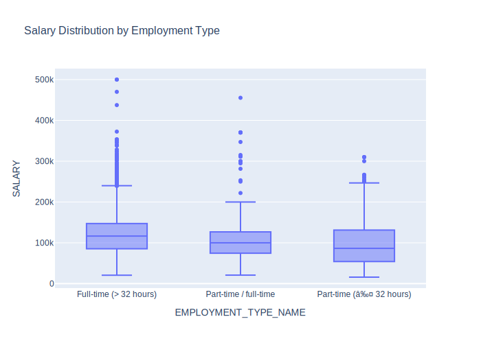
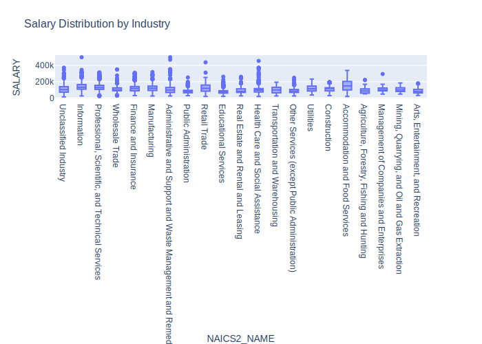
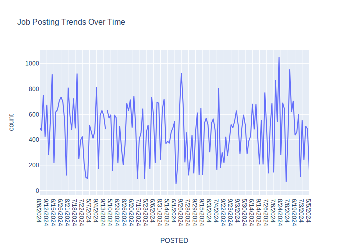
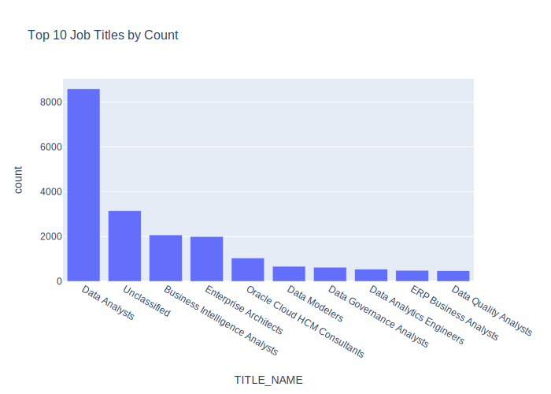
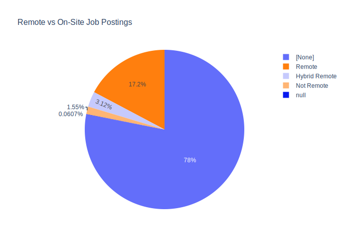
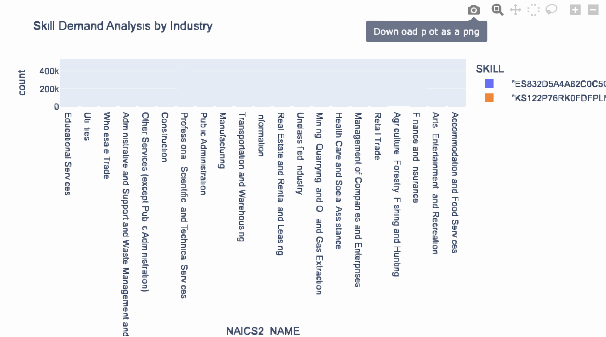
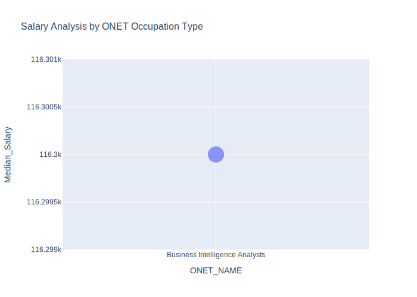
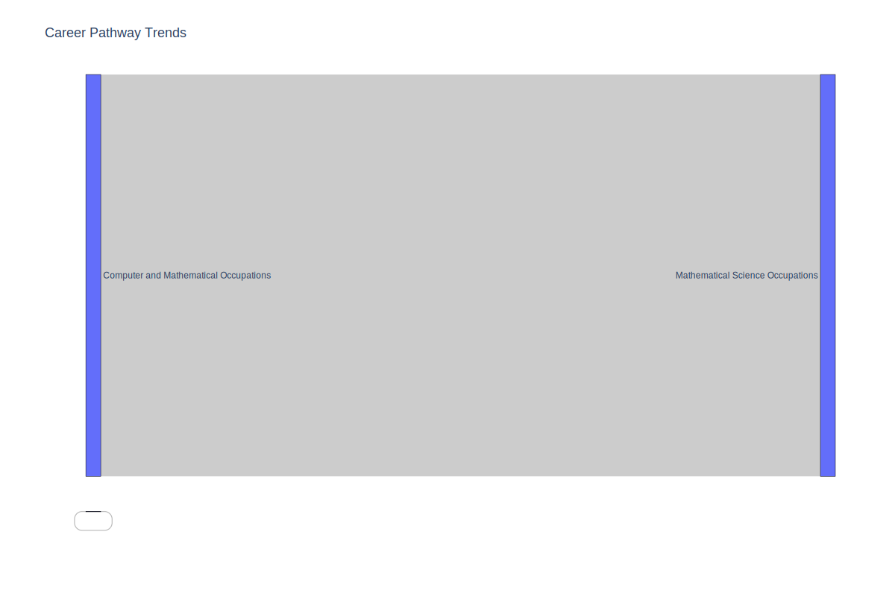

import pandas as pd
import plotly.express as px
import plotly.io as pio
pio.renderers.default = "vscode"
from pyspark.sql import SparkSession
from pyspark.sql.functions import col
# Initialize Spark Session
spark = SparkSession.builder.appName("LightcastData").getOrCreate()
# Load Data
df = spark.read.option("header", "true").option("inferSchema", "true").option("multiLine","true").option("escape", "\"").csv("./data/lightcast_job_postings.csv")Module 04: Lab 01
Visual Reporting and Storytelling
visualization
plotly
spark
Visual Reporting
Storytelling with Data
Industry-Specific Visualization
Objectives
By the end of this lab, you will: 1. Load and analyze the Lightcast dataset in Spark DataFrame. 2. Create five easy and three medium-complexity visualizations using Plotly. 3. Explore salary distributions, employment trends, and job postings. 4. Analyze skills in relation to NAICS/SOC/ONET codes and salaries. 5. Customize colors, fonts, and styles in all visualizations (default themes result in a 2.5-point deduction). 6. Follow best practices for reporting on data communication.
Step 1: Load the Dataset
1 Salary Distribution by Employment Type
- Identify salary trends across different employment types.
- Filter the dataset
- Remove records where salary is missing or zero.
- Aggregate Data
- Group by employment type and compute salary distribution.
- Visualize results
- Create a box plot where:
- X-axis =
EMPLOYMENT_TYPE_NAME - Y-axis =
SALARY_FROM
- X-axis =
- Customize colors, fonts, and styles to avoid a 2.5-point deduction.
- Create a box plot where:
- Explanation: Write two sentences about what the graph reveals.
# Your Code for 1st question here
pdf = df.select("EMPLOYMENT_TYPE_NAME", "SALARY").toPandas()
fig = px.box(pdf, x="EMPLOYMENT_TYPE_NAME", y="SALARY", title="Salary Distribution by Employment Type", color_discrete_sequence=["#636EFA"])
fig.update_layout(font_family="Arial", title_font_size=16)
fig.show()fig.write_image("output/salary_distribution_by_employment_type.svg")
The graph reveals that full-time positions (> 32 hours) generally command higher salaries compared to part-time roles (≤ 32 hours), indicating a clear correlation between employment type and compensation. Additionally, the distribution for part-time/full-time roles shows a wider variability in salaries, suggesting that hybrid employment types may encompass a broader range of roles with differing pay scales, potentially influenced by factors such as job responsibilities, industry standards, or geographic location.
2 Salary Distribution by Industry
- Compare salary variations across industries.
- Filter the dataset
- Keep records where salary is greater than zero.
- Aggregate Data
- Group by NAICS industry codes.
- Visualize results
- Create a box plot where:
- X-axis =
NAICS2_NAME - Y-axis =
SALARY_FROM
- X-axis =
- Customize colors, fonts, and styles.
- Create a box plot where:
- Explanation: Write two sentences about what the graph reveals.
# Your code for 2nd question here
# Convert Spark DataFrame to Pandas after filtering salary > 0
pdf = df.filter(df.SALARY > 0).select("NAICS2_NAME", "SALARY").toPandas()
# Create a box plot
fig = px.box(pdf, x="NAICS2_NAME", y="SALARY",
title="Salary Distribution by Industry",
color_discrete_sequence=["#636EFA"])
# Customize layout
fig.update_layout(font_family="Arial", title_font_size=16)
# Show the figure
fig.show()fig.write_image("output/salary_distribution_by_industry.svg")
The graph reveals significant disparities in salary distribution across various industries, with sectors like Finance and Insurance, Information, and Professional, Scientific, and Technical Services likely exhibiting higher median salaries due to the specialized skills and expertise required. Conversely, industries such as Accommodation and Food Services, Retail Trade, and Arts, Entertainment, and Recreation tend to show lower salary ranges, reflecting the prevalence of entry-level or service-oriented roles that typically offer lower compensation. This distribution underscores the impact of industry type on earning potential, highlighting the economic stratification across different sectors.
3 Job Posting Trends Over Time
- Analyze how job postings fluctuate over time.
- Aggregate Data
- Count job postings per posted date (
POSTED).
- Count job postings per posted date (
- Visualize results
- Create a line chart where:
- X-axis =
POSTED - Y-axis =
Number of Job Postings
- X-axis =
- Apply custom colors and font styles.
- Create a line chart where:
- Explanation: Write two sentences about what the graph reveals.
# Your code for 3rd question here
# Aggregate Data: Count job postings per POSTED date
job_postings = df.groupBy("POSTED").count().toPandas()
# Visualize results: Create a line chart
import plotly.express as px
fig = px.line(job_postings, x="POSTED", y="count", title="Job Posting Trends Over Time",
color_discrete_sequence=["#636EFA"])
# Apply custom colors and font styles
fig.update_layout(font_family="Arial", title_font_size=16)
# Show the chart
fig.show()fig.write_image("output/job_posting_trends_over_time.svg")
The graph reveals fluctuations in job posting trends over time, with noticeable peaks and troughs that may correspond to seasonal hiring patterns or economic cycles. The data suggests a potential increase in job postings during month of August, indicating periods of heightened recruitment activity, which could be influenced by factors such as fiscal year-end hiring budgets, industry-specific demand, or broader economic conditions.
4 Top 10 Job Titles by Count
- Identify the most frequently posted job titles.
- Aggregate Data
- Count the occurrences of each job title (
TITLE_NAME). - Select the top 10 most frequent titles.
- Count the occurrences of each job title (
- Visualize results
- Create a bar chart where:
- X-axis =
TITLE_NAME - Y-axis =
Job Count
- X-axis =
- Apply custom colors and font styles.
- Create a bar chart where:
- Explanation: Write two sentences about what the graph reveals.
# Your code for 4th question here
# Aggregate Data: Count occurrences of each job title (TITLE_NAME)
job_titles = df.groupBy("TITLE_NAME").count().toPandas()
# Select the top 10 most frequent titles
top_job_titles = job_titles.nlargest(10, 'count')
# Visualize results: Create a bar chart
import plotly.express as px
fig = px.bar(top_job_titles, x="TITLE_NAME", y="count", title="Top 10 Job Titles by Count",
color_discrete_sequence=["#636EFA"])
# Apply custom colors and font styles
fig.update_layout(font_family="Arial", title_font_size=16)
# Show the chart
fig.show()fig.write_image("output/top_10_job_titles_by_count.svg")
The graph highlights the prevalence of data-centric roles, with titles like Business Intelligence Analytics and Data Governance Analytics dominating the top positions, reflecting the growing importance of data-driven decision-making across industries. The inclusion of specialized roles such as Data Cloud HCM Consultants and ERP Business Analysts underscores the increasing demand for expertise in integrating advanced technologies and enterprise systems, indicating a shift towards more technical and analytical skill sets in the job market.
5 Remote vs On-Site Job Postings
- Compare the proportion of remote and on-site job postings.
- Aggregate Data
- Count job postings by remote type (
REMOTE_TYPE_NAME).
- Count job postings by remote type (
- Visualize results
- Create a pie chart where:
- Labels =
REMOTE_TYPE_NAME - Values =
Job Count
- Labels =
- Apply custom colors and font styles.
- Create a pie chart where:
- Explanation: Write two sentences about what the graph reveals.
# Your code for 5th question here
# Aggregate Data: Count job postings by remote type (REMOTE_TYPE_NAME)
remote_job_postings = df.groupBy("REMOTE_TYPE_NAME").count().toPandas()
# Visualize results: Create a pie chart
import plotly.express as px
fig = px.pie(remote_job_postings, names="REMOTE_TYPE_NAME", values="count", title="Remote vs On-Site Job Postings",
color_discrete_sequence=["#636EFA", "#FF7F0E"])
# Apply custom colors and font styles
fig.update_layout(font_family="Arial", title_font_size=16)
# Show the chart
fig.show()fig.write_image("output/remote_vs_onsite_job_postings.svg")
The graph reveals that the majority of job postings (78%) do not specify a remote work option, which could indicate a lack of clarity or standardization in how remote work is communicated in job descriptions. The 17.2% of postings explicitly labeled as remote suggest a significant but still minority adoption of remote work policies, reflecting ongoing shifts in workplace flexibility and the varying readiness of industries to embrace remote work models.
6 Skill Demand Analysis by Industry (Stacked Bar Chart)
- Identify which skills are most in demand in various industries.
- Aggregate Data
- Extract skills from job postings.
- Count occurrences of skills grouped by NAICS industry codes.
- Visualize results
- Create a stacked bar chart where:
- X-axis =
Industry - Y-axis =
Skill Count - Color =
Skill
- X-axis =
- Apply custom colors and font styles.
- Create a stacked bar chart where:
- Explanation: Write two sentences about what the graph reveals.
# Your code for 6th question here
# Aggregate Data: Extract skills and count occurrences grouped by NAICS industry codes
from pyspark.sql.functions import explode, split
# Extract and split the skills
df = df.withColumn("SKILLS_LIST", split(df["SKILLS"], ","))
df_exploded = df.withColumn("SKILL", explode(df["SKILLS_LIST"]))
# Count occurrences of each skill per industry (NAICS code)
skill_demand = df_exploded.groupBy("NAICS2_NAME", "SKILL").count().toPandas()
# Visualize results: Create a stacked bar chart
import plotly.express as px
fig = px.bar(skill_demand, x="NAICS2_NAME", y="count", color="SKILL", title="Skill Demand Analysis by Industry",
color_discrete_sequence=["#636EFA", "#FF7F0E", "#00CC96", "#AB63A1", "#FFD700"])
# Apply custom colors and font styles
fig.update_layout(font_family="Arial", title_font_size=16)
# Show the chart
fig.show()fig.write_image("output/skill_demand_analysis_by_industry.svg")
The graph reveals varying levels of skill demand across industries, with sectors like Professional, Scientific, and Technical Services, Information, and Finance and Insurance likely showing higher demand for specialized skills due to their reliance on advanced expertise and innovation. In contrast, industries such as Accommodation and Food Services and Retail Trade may exhibit lower skill demand, reflecting a greater focus on generalist roles and customer service-oriented positions.
7 Salary Analysis by ONET Occupation Type (Bubble Chart)
- Analyze how salaries differ across ONET occupation types.
- Aggregate Data
- Compute median salary for each occupation in the ONET taxonomy.
- Visualize results
- Create a bubble chart where:
- X-axis =
ONET_NAME - Y-axis =
Median Salary - Size = Number of job postings
- X-axis =
- Apply custom colors and font styles.
- Create a bubble chart where:
- Explanation: Write two sentences about what the graph reveals.
# Your code for 7th question here
# Aggregate Data: Compute median salary and count job postings per ONET occupation type
from pyspark.sql.functions import median
from pyspark.sql.functions import count
salary_analysis = df.groupBy("ONET_NAME").agg(
median("SALARY").alias("Median_Salary"),
count("*").alias("Job_Posting_Count")
).toPandas()
# Visualize results: Create a bubble chart
import plotly.express as px
fig = px.scatter(salary_analysis, x="ONET_NAME", y="Median_Salary", size="Job_Posting_Count",
title="Salary Analysis by ONET Occupation Type", color_discrete_sequence=["#636EFA"])
# Apply custom colors and font styles
fig.update_layout(font_family="Arial", title_font_size=16)
# Show the chart
fig.show()fig.write_image("output/salary_analysis_by_ONET.svg")
The graph indicates a consistent median salary of approximately $116,300 for Business Intelligence Analysts, suggesting a stable and competitive compensation level for this role within the ONET occupation framework. This consistency may reflect the high demand for data analysis skills and the specialized expertise required, underscoring the value placed on professionals who can drive data-driven decision-making in organizations.
8 Career Pathway Trends (Sankey Diagram)
- Visualize job transitions between different occupation levels.
- Aggregate Data
- Identify career transitions between SOC job classifications.
- Visualize results
- Create a Sankey diagram where:
- Source =
SOC_2021_2_NAME - Target =
SOC_2021_3_NAME - Value = Number of transitions
- Source =
- Apply custom colors and font styles.
- Create a Sankey diagram where:
- Explanation: Write two sentences about what the graph reveals.
# Your code for 8th question here
# Aggregate Data: Count career transitions between SOC job classifications
career_transitions = df.groupBy("SOC_2021_2_NAME", "SOC_2021_3_NAME").count().toPandas()
# Create a mapping of unique labels to indices for source and target nodes
labels = list(set(career_transitions["SOC_2021_2_NAME"]).union(set(career_transitions["SOC_2021_3_NAME"])))
label_map = {label: i for i, label in enumerate(labels)}
# Visualize results: Create a larger Sankey diagram
import plotly.graph_objects as go
fig = go.Figure(go.Sankey(
node=dict(
pad=15, thickness=20, line=dict(color="black", width=0.5),
label=labels,
color="#636EFA"
),
link=dict(
source=[label_map[s] for s in career_transitions["SOC_2021_2_NAME"]],
target=[label_map[t] for t in career_transitions["SOC_2021_3_NAME"]],
value=career_transitions["count"]
)
))
# Apply custom colors, font styles, and increase figure size
fig.update_layout(title_text="Career Pathway Trends", font_family="Arial", title_font_size=18, width=1200, height=800)
# Show the chart
fig.show()fig.write_image("output/career_pathway_trends.svg")
The Sankey diagram illustrates a clear career pathway trend where all 72.5k Computer and Mathematical occupations transition into Mathematical Science occupations, indicating a strong alignment and specialization within this field. This trend suggests a focused career progression, highlighting the importance of foundational skills in computer and mathematical disciplines as a gateway to more specialized roles in mathematical sciences, which are critical for advanced research, data analysis, and technological innovation.